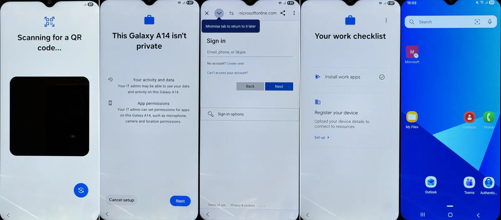

Company-owned phones enrolled by QR code, locked down to the CIS Android benchmark, and cut off from Microsoft 365 the moment they fall out of compliance.
- Model
- Android Enterprise, fully managed
- Baseline
- CIS Google Android v1.5.0, Level 1
- Tested on
- Galaxy A55, A54, A14